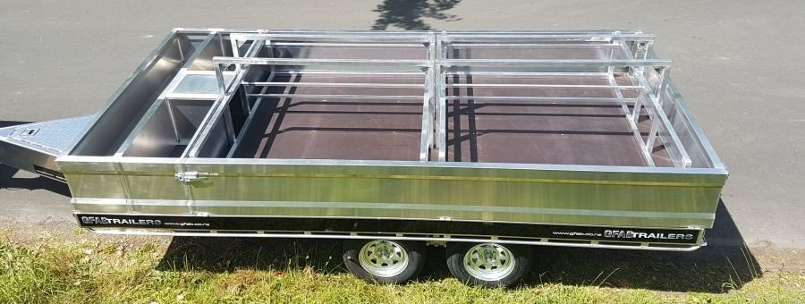
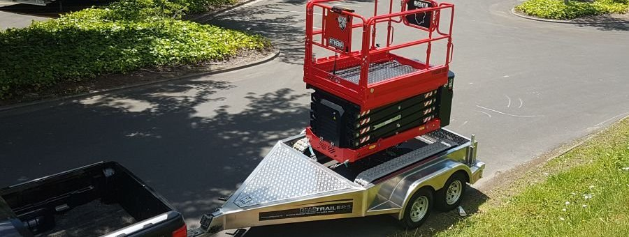

Trailers
We pride ourselves in designing and fabricating a large range of alloy trailers that are
purpose
built to suit each customers individual needs and requirements.
All GFAB trailers are built using high tensile marine and transport grade alloy.
All GFAB trailers are built using high tensile marine and transport grade alloy.

Boat Trailer
Our alloy boat trailers are custom configured to suit your boat. Having experience
in
the
building of boats, we understand the best approach to producing an alloy boat
trailer
that will
fit your boat perfectly!
Jetski Trailer
Alloy Jetski trailers, designed and custom built to suit all ski brands & models. These
are
solid trailers that wont rust in the sea conditions and are built to last the life of
your ski.
All our Jetski trailers include 13" alloy wheels.
Box Trailer
Custom box trailers built to suit the specific requirements and criteria of our
customers. Of
late we have built box trailers for trades and construction business, sports teams,
personal
use, race cars and motocross bikes transportation

Sports Trailer
GFAB Sports Trailers are a popular option for a top of the range "all rounder" trailer,
that
will do a bit of everything for you.

Flatdeck Trailer
GFAB manufacturers and produces a range of alloy flatdeck trailers that are custom
designed to
suit your individual needs. As an option, a 2 metre rear pull out extension can be
included in
the trailer, this increases the trailers overall usable length.

Roofing Trailer
A specialist range of custom aluminium trailers that are purpose built for the roofing
and
building industry. These trailers have built in drawbar toolboxes and have the option to
include
2 metre pull out extensions.
Sportsdeck Trailer
A range of aluminium Sportsdeck trailers. These trailers are built as a super light
weight
trailer, used for transporting sporting toys and general purpose transportation.

Scissor Lift Trailers
GFAB aluminium scissor lift trailers are based off our popular sports trailer design.
The design
has been modified to house and transport both tyre and tracked scissor lifts.
Boat
GFAB produces solid and robust alloy Jetboat and Skiboat hulls that will withstand the test
of time.
These are constructed using top quality 5083 marine grade aluminium and no measure is spared
to
ensure you drive away with the boat of your dreams being towed behind.
The team here at GFAB have a history of designing and building alloy fishing and jet boats for a number of years. Having produced over 100 boats the GFAB team have the skills, experience and knowledge to make your next project a success.
GFAB also design and construct custom alloy modifications for existing boats. Hardtops, rocket launchers, Minkota mounts and fuel tanks are just a few of the modifications we have recently undertaken.
The team here at GFAB have a history of designing and building alloy fishing and jet boats for a number of years. Having produced over 100 boats the GFAB team have the skills, experience and knowledge to make your next project a success.
GFAB also design and construct custom alloy modifications for existing boats. Hardtops, rocket launchers, Minkota mounts and fuel tanks are just a few of the modifications we have recently undertaken.

Jetboat Hulls
GFAB offers a range of aluminium jetboat hulls ranging from 3 meters to 5 meters. We can
also
work with you to design and produce anything outside of these sizes.
Skiboat Hulls
GFAB currently custom builds 5800 Skiboats. If you are looking for something larger or
smaller
than a 5800, we can workwith you to design and produce the ideal hull to suit your
needs.
Alloy Fabrication

Marine Fabrication
We have a solid reputation for creating one off, custom aluminium modifications for many
different boat models. These modifications include outboard pods, boarding platforms,
rails, live bait tanks and bimini tops to name a few.

Custom Fuel Tank
Custom alloy fuel tanks can be produced in any shape and size for a number of different
purposes. Whether its a main fuel tank for a new boat, a fuel tank to
fill a gap and increase your fuel capacity or even a tank to hold water or waste.

Containment Bunds
With the recent clamp downs on environmental, health & safety laws in NZ, these bunds are an
ideal way of helping to keep your liquid hazardous substances in check & complying with
environmental regulations.

Others
GFAB also has a great reputation for fabricating one off general alloy engineering
requirements. Aluminium fire guards, commercial shop stands and racking, bunds, water tanks,
fences and balustrades to name a few.